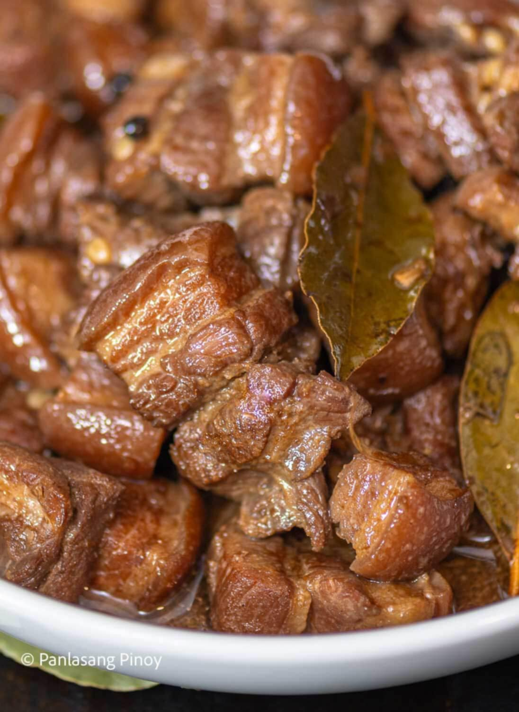

Adobo is a popular Filipino dish braised in vinegar, soy sauce, garlic, and bay leaves. Tender, flavorful, and a staple in every Filipino household.
High in protein and rich in flavor. Nutritional value depends on portion and preparation method.